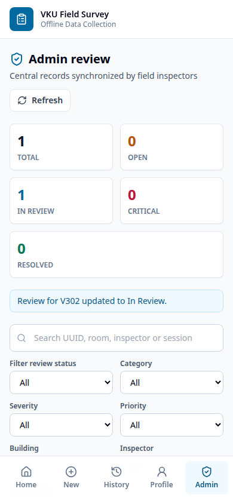

Implemented Interface
Key Screens



Mobile Development Mini-Project 1
Offline Data Collection PWA and Capacitor
A network-dependent inspection form can lose unfinished observations, photos and submissions. This project treats IndexedDB as the primary source of truth: it autosaves drafts, accepts submissions offline, survives refresh/restart and synchronizes queued UUID records when the API is reachable.
The professional extension adds inspector/session accountability, category checklists, issue classification, versioned edits, GPS evidence, Admin review and Google Sheets reporting while preserving the original PWA and sync requirements. A server-validated Admin access key gates the review screen in both the PWA and APK.
| DONE | Standalone manifest, VKU theme, 192/512 icons and app-shell precache |
| DONE | IndexedDB autosave, draft restore and schema-v1 compatibility |
| DONE | Local profile, active session and immutable survey snapshots |
| DONE | Six-step form, custom room, room type and 1-5 star rating |
| DONE | Five category-specific checklists with OK/Issue/Not Checked |
| DONE | Severity, priority, issue type, recommended action and evidence rules |
| DONE | Photo/GPS evidence with web and Capacitor implementations |
| DONE | Sequential offline queue, reconnect sync and idempotent UUID API |
| DONE | Filters, Needs Action badge, dashboard and local CSV/JSON export |
| DONE | Stable-UUID edits, version history and refresh-safe edit drafts |
| DONE | Admin assignment, review status, notes and central export |
| DONE | Server-validated Admin access key gate for PWA and APK |
| DONE | Google Sheets/Drive upsert, evidence URL and AuditLog |
| DONE | Java 21 APK build and public GitHub Release download |
| DONE | Public HTTPS PWA and same-origin Vercel API deployment |
| PENDING | Physical-device Camera, Network and GPS verification |
System Design
React, TypeScript, Vite, Tailwind, React Router, idb, Workbox and Capacitor.
Node.js, Express/Vercel API, Admin key middleware, version validation and an Apps Script central bridge.
Each Survey includes UUID/version, sync and review statuses, inspector snapshot, session snapshot, facility location, room type, category checklist, rating, severity, priority, issue type, recommended action, notes, optional Base64 photo and GPS status/evidence.
Snapshots preserve historical accountability when the local profile or active session changes. IndexedDB version 3 also stores autosaved edits; a runtime normalizer safely reads original survey records.
Workbox precaches HTML, CSS, JavaScript, icons and manifest data for offline boot. Browser evidence uses file input and Web Geolocation; Android uses Capacitor Camera, Network and Geolocation. GPS failure is recorded as unavailable and does not block a valid survey.
Java 21/Gradle builds package edu.vku.fieldsurvey for
Android SDK 23-35. GitHub Actions signs and publishes the debug APK,
so Android Studio is not required on the development machine.
Business Workflow
The extension turns a simple form into a traceable inspection workflow. Every record answers four questions: who inspected it, where and when it was inspected, what condition was found, and what action should happen next.
| Module | Implemented behavior | Operational value |
|---|---|---|
| Inspector and session | Offline profile stores name, ID, class/unit, phone, role and team. An active session stores survey batch, date, campus/zone and shift. Both are copied as immutable snapshots into each survey. | Auditable ownership remains correct even after the next session or profile edit. |
| Facility context | Building, floor, room, room type and custom room values identify the inspected location without forcing a fixed room list. | Suitable for classrooms, labs, offices, halls, libraries and remote buildings. |
| Category checklist | Hardware, Projector, AC, Electrical and Furniture each load a focused checklist. Items support OK, Issue and Not Checked, while the original 1-5 rating remains available. |
Inspectors record repeatable evidence instead of relying only on free text. |
| Issue management | Severity, priority, issue type and recommended action classify findings. High/Critical records require explanatory notes and a photo before submission. | Creates a clear hand-off from observation to repair, replacement, cleaning, escalation or monitoring. |
| Evidence and correction | Photos are resized and saved offline; GPS stores coordinates, accuracy, capture time and an unavailable status when the device cannot provide a fix. Submitted surveys can be edited with a stable UUID and incremented version. | Preserves evidence in weak-signal areas and keeps corrections linked to the original finding. |
| Review and reporting | History filters by status, category, severity, priority, inspector and date. Admin can assign, add review notes and move a survey through Open, In Review, Resolved or Rejected. | Turns collected data into an actionable work queue and a reportable dataset. |
Complete profile/session, create a survey, move through the six steps, review validation, save locally, submit and continue working offline. History exposes retry, edit and export actions.
Open /admin, enter the demo key, load synchronized surveys, inspect evidence and update assignment/review metadata. Admin endpoints reject missing or invalid keys on the server.
ADMIN_ACCESS_KEY and works in both the PWA and APK builds.
Implemented Interface

Verification And Delivery

Business rules, High/Critical photo requirement, old-schema normalization, IndexedDB edit recovery, immutable snapshots, queue ordering and server/review validation.
Profile refresh, edit versioning, Admin review, online/offline submit, reconnect sync, GPS, export, wrong-key rejection and offline boot.
| Check | Result |
|---|---|
npm test | Server and client unit suites pass, including validation, migration, queue, snapshot, edit and review rules. |
npm run check | TypeScript and project checks pass for client, server and shared configuration. |
npm run test:e2e -w client | Chromium flow passes for offline boot, reconnect sync, profile recovery, edit versioning, export, GPS and Admin key rejection/acceptance. |
| APK build | Capacitor Android build produces package edu.vku.fieldsurvey; physical Camera/Network/GPS verification remains the final manual step. |
| Deliverable | Access |
|---|---|
| Live PWA | https://miniproject1-client.vercel.app/ |
| Admin screen | https://miniproject1-client.vercel.app/admin Demo key: VKU-ADMIN-2026 |
| GitHub source | https://github.com/tuaw-khoi/miniproject1 |
| Android APK | https://github.com/tuaw-khoi/miniproject1/releases/download/apk-latest/vku-field-survey.apk |
| Google Sheet | https://docs.google.com/spreadsheets/d/1Xctej_SH5Uo99ND0lzJh8EFS4Yfx-EnvC1Y8i9deh0Q/edit?usp=sharing |
| Drive evidence | https://drive.google.com/drive/folders/1zlXHJdzi2g7GdeCwiGG_xjk14bGyTDJ5?usp=sharing |
The PWA, same-origin API, public source and Android release are ready for demonstration. Central records use Google Sheets upsert semantics and uploaded photos expose Drive URLs in the sheet. The remaining validation item is installing the APK on a physical Android phone and exercising native Camera, Network and GPS permissions end to end.
Conclusion. VKU Field Survey meets the original offline-first learning objectives and now models a credible inspection-to-resolution process. Its core guarantee remains unchanged: valid field data is saved locally first and never depends on immediate connectivity.